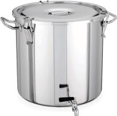

İhtiyaçlarımız
Öncelik sırasına göre eksiklerimiz
Aydınlatma
- Bisikletin görünürlüğünü sağlayan led flaşörler
- Bisikletlinin önünü görmesini sağlayan led fenerler
- Arkadan gelen araçların bisikleti görmesini sağlayacak güçlü kırmızı stop ışıkları
- Bisikletlinin görünürlüğünü sağlayan fosforlu 3m banda sahip yelekler
- Karanlık sur içlerinde, kuytuda yatan, saklanan, gizlenen, çorbaya muhtaç evsizleri tespit etmek için güçlü led fenerler
Walky Talky Telsizler
Bir grup dışarıda beklerken, diğer bir grup elinde fenerleriyle evsiz bulmak umuduyla sur içlerine, yıkıntı binalara girdiğinde;
- Eğer evsiz varsa, geri dönmeye gerek kalmadan dışarıdaki ekibe çorba hazırlayıp getirmesini söylemek için.
- İki ekibin arasındaki görüşün/iletişimin kesildiği bu gibi anlarda güvenlik sağlamak amacıyla
- Trafikte öncü ve artçının iletişim de kalabilmesi için
- Bir mıntıkaya gelen ekibin, çorbaya muhtaç evsiz olup olmadığını anlamak üzere sokaklara dağılıp, birbirleriyle iletişimde kalabilmeleri için
Daha İyi Termos
- Kasalı bisiklet ile taşınacak büyük boy termos. Örnek: 
- Bisikletlinin suluk aparatında taşıyabileceği 1 veya 2 lt ( kaliteli/en az 16 saat ısıyı tutabilen) termoslar (Tercihen termosun mucidi Thermos markasına ait ürünler)
- Bisikletlinin portbagaj çantalarında taşıyacağı 3lt veya daha büyük termoslar